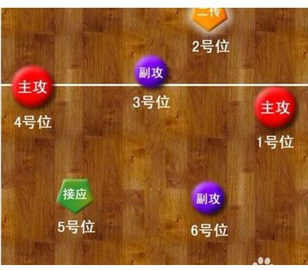

排球站位是轮换的,轮次是由开场站位所决定的。
没有哪个位置必须要站哪个角色的队员.但同类型的队员一般站对角,比如主攻A站4号位,那么对角的1号位必然站的主攻B;副攻A在3号位,6号位就必然是副攻B;接应如砸2号位,二传则会在5号位。
换位依据轮次来,首先由1号位队员发球,此轮则该队员转到6号位,由上轮在2号位的队员,转到1号位发球.依次顺时针转。如我方的球权,该轮被对方得分,我方轮次不会变,直到我方得分,换人发球,则轮次转一轮。也就是我方从对手那里得到了发球权，才顺时针转一个位置，但连续得分或失分是不用转。
接发球的站位主要是为配合二传的跑动。采用五一配备时，若主力二传在前排，则接应二传不插上；若主力二传在后排，则主力二传插上。
采用四二配备时，前、后排是完全对称的，既可以后排二传插上也可以不插上。以下示图为五一配置。如果是四二配置，将前排的接应看成二传，后排的二传看成接应即可。
二传在二号位时这是最基本的站位，以后每次接一传后的位置调整，都以恢复或接近这个站位为标准。
为了发挥队员技术特长，更有效地防守与进攻，人为地规定了每个位置的防守、进攻人员，但这种站位在绝大多数时候和轮次是不同的，所以需要队员的“跑位”。
我方发球时，球一过网，大家就从自己所在的轮次跑到自己防守时应该站得位置；
对方发球时，我方队员先站在自己轮次的位置接一传，接到一传后前排队员跑动到自己的进攻位置（主攻2，4号站位，副攻3号站位）；
我方队员把球打过去时要进行保护，保护完后再跑回自己防守的位置，这就叫跑位。
三米线与站位毫无关系，它是限制进攻队员的，所以它也叫攻击线，即后排队员不能在三米线（包括延长线）内将高于球网的球直接击入对方场内。我们简单的理解就是后排队员不能在三米区内跳起扣球（包括起跳前脚踩三米线或其假想延长线），这也意味着后排队员不能拦网。
后排队员起跳前踩三米线就算进入三米区；发球队员击球前踩端线犯规；特别注意！本方队员踩中线，只要脚（或其地面的垂直投影）的任一部未脱离中线，就算仍在本方场内，而不算过中线犯规。
前排三人才可以参与进攻，后排三人在前排区域，手不能高过球网去拦网或击球到对方半场，但可以向本方球场内传球。
球员通常不需要掌握全部六种技术——发球、一传（接发球）、二传（举球、托球)、扣球、拦网、救球，而是通常根据球队的战术，以其中的一种或多种为专长。最常见的位置分配包含三种位置:攻手（分为主攻手和副攻手）、二传手和自由人（专职防守的球员） 为了有效阻挡对方的进攻，并在对方有足够反应时间之前将球以陡峭的角度高速弹回对方场地， 一般来说由身材较高且弹跳力好的球员担当攻手。
二传手（举球员、托球员）
二传手的职责在于组织全队的进攻，他们负责在二传时将球送至让攻手最适宜扣球的位置。二传手必须有能力和扣球队员组合出多种变化以破坏对方的防守。移动快速、传球精准是一个二传手的必备素质。一位好的举球员可串起全队的攻势，并且必须相当了解队上各攻击手的特性与习惯，在比赛中更要保持清楚的头脑与思维，另外，在某些时候举球员也必须扮演攻击手角色，所以除了练习举球技巧外，举球员也必须具备些许长球攻击能力，所以一位优秀的举球员的训练与养成也是相当辛苦的。
自由人（任意球员）
自由人是专职防守的球员，负责接扣球和接发球（救球）。通常自由人具有全队最快的反应速度和最好的一传技术。由于自由人不需要在网前进攻或防守，可以由一传技术好的矮个子球员胜任。在比赛被指定为自由人的球员不可以担任其他位置。任意球员的替换次数是不受限制的，但两次的替换之间必须隔一次死球，而且只能由被替换下场者做轮替。替换的时间必须在裁判吹哨示意发球前做更换。每一局开始前，任意球员不得先进场，必须等第二裁判核对先发球员后才可替换进场。
副攻手
副攻手是经常在靠近二传手的位置打出快攻的球员。副攻手专职拦网，因为他们必须阻挡来自对方副攻手的快攻，并且需要从中间向两边快速移动以组织双人拦网。通常副攻手是队中最高的球员，且不要求有很好的防守技术。
主攻手
主攻手是在靠近标志杆的位置进攻的球员。由于大多数传向主攻位置的球都是高球，因此主攻手往往采用很长的助跑，有时甚至从边线外开始助跑。在进攻中主攻手通常依靠强力扣杀得分，但有时也要求以斜线助跑和快攻来扰乱对方的防守。主攻手还需要掌握一传技术，因为在对方发球时他们通常作为自由人以外的第二一传点。惯用右手的主攻手最适合在4号位（前排左侧）进攻，相对的，惯用左手的主攻手最适合在2号位（前排右侧）进攻。
根据攻手和二传手的数量不同，排球有"4-2"、"6-2"和"5-1"三种标准阵型。4-2是最基本的阵型，只出现在初学者的比赛中，而在高级别比赛中，目前最常用的是5-1阵型。
4-2阵型
4-2阵型有4个攻手和2个二传手。二传手通常在前排中间的位置进行二传（在罕见的出现在比赛中的4-2阵型中，二传手更多地在前排靠右的位置进行二传）。因此在比赛的任何时刻全队有两名前排进攻球员。
在轮转中两名二传手对角站位。在典型的阵型中包括两名对角站位的主攻手，因此在任何时刻前排和后排都各有一名主攻手。发球之后，前排球员移动到各自负责的位置，二传手总是在前排中间。或者，二传手移动到前排靠右的位置，此时前排另外两名球员分别担当主攻（左侧）和副攻（中间），但缺陷在于缺少一名在二传手身后的进攻球员，使得对方有一名前排球员可以放心地参与中间位置的拦网。
4-2阵型很明显的弱点就是只有两名进攻球员，使得球队可采用的进攻手段很少。
从另一个角度看，二传手也是一种攻击力（虽然是较弱的攻击力），因为当二传手轮转到前排时，是允许扣球的，所以当一传过来的球近网时，二传手可以选择击球过网（二次球）。这意味着在其他情况下可以忽略对二传手进行拦网的对方球员，此时必须留意二传手的进攻，那么我方的进攻球员就可能得到更好的机会。
6-2阵型
在6-2阵型中，总有一名球员从后排移动到前排进行二传，三名前排球员全部担当进攻位置。因此，所有六名球员都会在某些时刻担任攻手，其中有两人需要担任二传手。所以，6-2阵型实际上是一种4-2阵型，只不过由后排的二传手穿插到前排负责二传。
6-2阵型需要两名二传手，在轮转中对角站位。除二传手外，典型的阵型中还包括两名副攻手和两名主攻手。采用对角站位的方法，任何时刻前后排各有一名主攻手一名副攻手。在发球之后，前排球员移动到各自负责的位置。
6-2阵型的优势在于每一时刻都有三名前排进攻球员，使得进攻手段最大化。然而，6-2阵型不仅要求球队拥有两名高质量的二传手，还要求这两名球员在前排时又是有实力的攻手。在国际级比赛中，只有古巴国家女子排球队采用这种阵型。
5-1阵型中只有一名球员担任二传手，不管他的位置在前排还是后排。因此当二传手在后排时，全队拥有三名前排攻击球员；而当二传手在前排时，只有两名前排攻击球员。加起来一共五名。
在5-1阵型中，轮转中与二传手对角站位的球员称为接应二传。一般来说，接应二传不参与一传，当对手发球时，接应二传站在队友们的后方。当二传手位于前排时，接应二传可以作为第三进攻点（后排进攻），这在现代排球中已经成为各队提高攻击力的常用手段。因此接应二传通常是队中扣球技术最好的球员。后排进攻通常来自后排右侧（1号位），但在高级别的比赛中从后排中间六号位进攻的情况比较多。
5-1阵型的一大优势是，二传时总有3个攻击点可攻选择。如果二传手运用好这一点的话，对方的副攻手可能没有足够的时间与主攻手组织双人拦网，增加了我方进攻得分的机会。另一个优势是，当二传手位于前排时，他可以采用二次球进攻，这样能够进一步扰乱对方拦网球员:我方二传手可能扣球，也可能传球给进攻球员中的任何一位。一个优秀的二传手能深刻理解这一点，不仅能二次球进攻或者传快攻，还可以能够设法迷惑对方球员。
5-1进攻阵型实际上是6-2阵型和4-2阵型的混合:当二传手在前排时，看起来与4-2阵型相似；当二传手位于后排时，又与6-2阵型相似。
一、赛前准备:
第一裁判主持抽签，首先选择发球权、球区。
二、比赛开始过程与停止:
第一裁判员鸣哨后，在各自场区端线站好，再鸣哨时按原定位置（比赛前填写的位置表）站好。
三、得分:
A、一方发球后对方接球失误、犯规或球落到对方场内，即发球方得分，继续发球；
B、如发球队员发球违例或发出界外则对方得分，换发球。
四、暂停、换人:
每局比赛中各队均有2次暂停，6人次换人机会。（成死球时可要求)
1、暂停:每局比赛中各队均有2次暂停；正规比赛每8分一次技术暂停。
2、换人:
A、主力队员只能退出比赛一次，同一局中他再次上场比赛时，只能回到该局替换他的队员位置。
B、替补队员每局只能上场比赛一次，可以替换任何一个主力队员，同一局只能由被他替换下场的队员来替换。
注:比赛开始上场的队员为主力队员，其它队员为替补队员。
是在“五一”配备的球队所采用的度过两点攻弱轮的一种战术换人手段。在“五一”配备的球队中，由于只有一个二传手，每当二传轮转到前排2、3、4号位时，前排就只有两个人可以参加进攻。因此，“五一”配备的球队存在三个三点攻强轮和三个两点攻弱轮。一旦被对手在某个两点攻弱轮次抓住了机会，就容易出现“卡轮”失分。两点换三点就是为了解决这个问题所设计的。也就是当二传轮转到前排时（两点攻弱轮），由替补接应二传换下前排二传手，由替补二传手换下后排对角的接应，这样一来，前排就有了第一主攻、第一副攻、接应二传三个进攻点，二传手再由后排插上传球。但是由于受到换人名额所限，这种战术一局一般只能采用一次。“四二配备”的球队由于有两个二传手，每轮都是三点进攻，不存在强弱轮，也就不涉及这种战术。